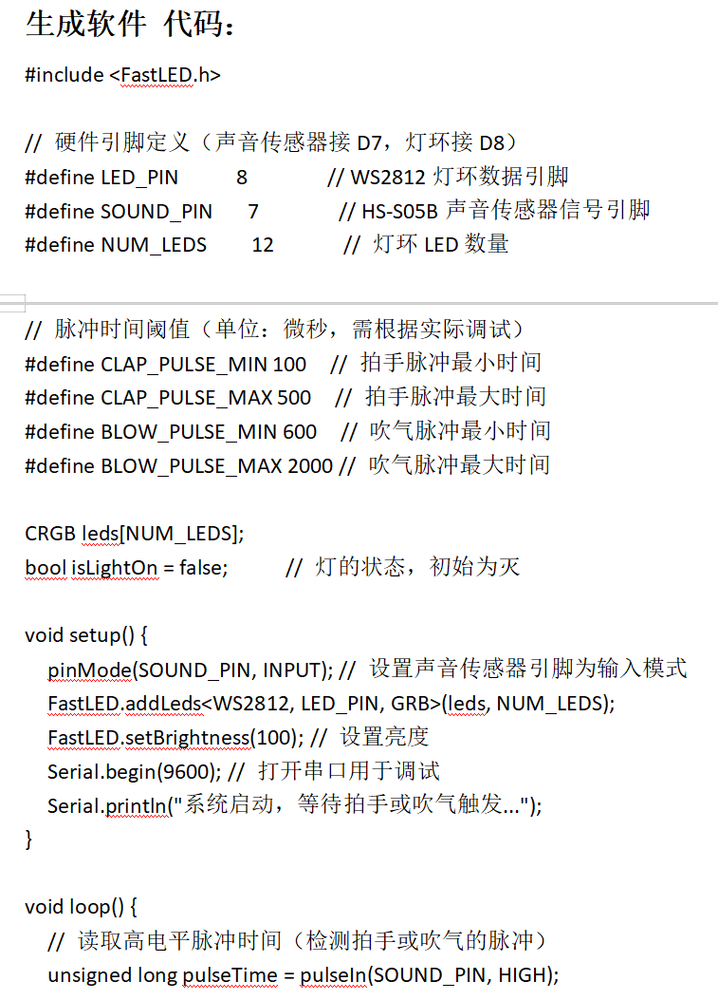
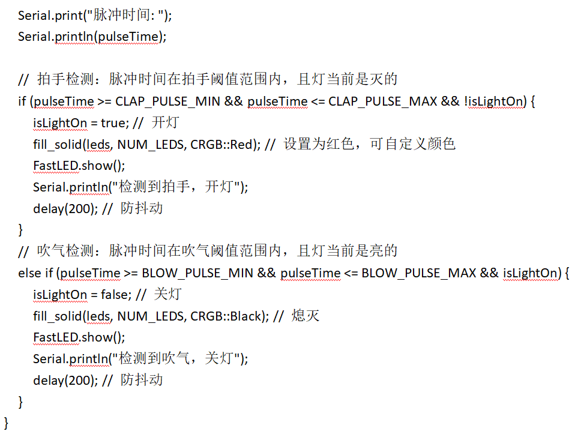
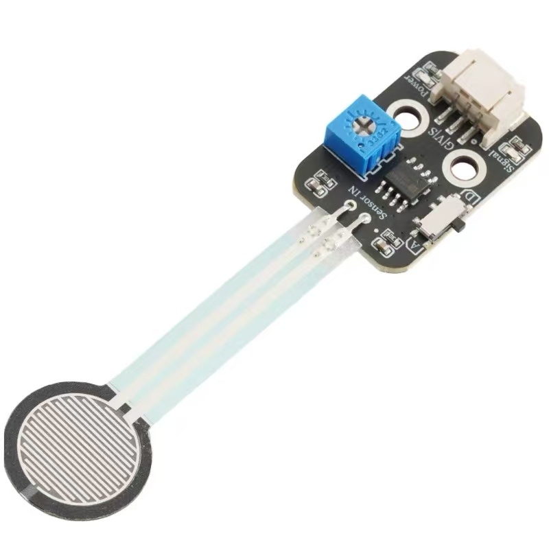
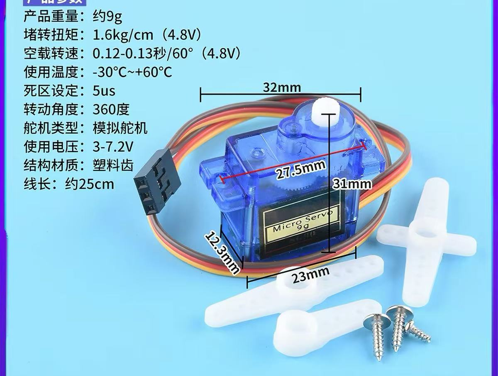

Arduino 硬件分析与智能灯光控制
✅ 作业清单
- 硬件选型与采购（WS2812灯环、HS-S05B超声波传感器、Arduino 板）
- 电路连接与调试
- Arduino 代码编写（传感器数据读取）
- 灯效控制与距离测量功能测试
- 整体封装与展示视频拍摄
🎯 WS2812和HS-S05B - 最终成果展示
🔧 运用到的 Arduino 硬件分析
1. WS2812灯环
WS2812灯环是将多颗可寻址LED集成于一体的环形RGB灯板，每颗灯珠内置驱动芯片，仅需一根信号线即可独立控制每颗灯珠的任意颜色和亮度。使用时将VCC接5V、GND接地、DIN接Arduino的数字引脚，配合NeoPixel库即可轻松实现跑马灯、呼吸灯等炫彩效果。常用于指示灯、氛围灯、创意装饰及互动灯光项目中。
2. HS-S05B超声波传感器
HS-S05B超声波传感器通过发射40kHz超声波并检测回波来测量物体距离，非接触、精度高、成本低。使用时Trig引脚发送一个10μs高电平触发测量，Echo引脚输出高电平宽度对应距离值，通过Arduino的pulseIn()函数即可计算出距离（单位厘米）。常用于避障机器人、智能车位检测、倒车雷达及液位测量等场景。
🎨 应用场景展示
通过WS2812灯环实现炫彩灯光效果，配合超声波传感器测量距离实现互动灯光控制。装置可用于创意装饰、智能感应灯、互动展示等场景，根据距离变化动态调整灯光颜色和亮度。

图1：传感器与 Arduino 连接实物图
🔨 WS2812和HS-S05B - 制作过程记录
📌 第一步：硬件准备
采购 Arduino Uno 开发板、WS2812灯环、HS-S05B超声波传感器、面包板及杜邦线若干。
📌 第二步：电路搭建
按照电路图连接各模块：WS2812灯环的VCC接5V、GND接地、DIN接数字引脚D8；HS-S05B超声波传感器的VCC接5V、GND接地、Trig接D7、Echo接D6。

图1：Arduino 与 WS2812、HS-S05B 连接示意图
📌 第三步：代码编写
编写 Arduino 代码实现：初始化 FastLED 库控制 WS2812 灯环；使用 pulseIn() 函数读取传感器信号；实现拍手开灯和吹气关灯的互动功能。
💡 AI 帮助编写代码

图1：Arduino 代码 - 硬件引脚定义和初始化部分

图2：Arduino 代码 - 拍手检测和吹气检测逻辑
📌 第四步：测试与调试
逐个测试各传感器功能，调整超声波传感器的测量精度，确保灯效响应及时。遇到问题：超声波测量不稳定，通过多次测量取平均值解决。
压力传感器 - 最终成果展示
🔧 运用到的 Arduino 硬件分析
压力传感器FSR402
FSR402是一种圆形力敏电阻（Force Sensing Resistor），以超薄高分子薄膜作为敏感材料，当传感器表面受到压力时，内部电路导通面积增加，导致其电阻值随压力增大而减小。FSR402的有效感应直径为18.28mm，厚度仅约0.45mm，可检测约100g至10kg的压力范围，具有成本低、易安装、响应快（小于3ms）等优点。使用中需将FSR402和一个固定电阻（通常为10kΩ）串联构成分压电路，一端接5V，另一端接Arduino模拟输入引脚（如A0），Arduino通过读取模拟电压值来判断压力大小。该传感器适用于触摸检测、压力感知开关、交互装置及人体存在感应等无需精密标定的压力识别任务。

图1：压力传感器FSR402实物图
🔨 压力传感器 - 制作过程记录
内容待补充
🎯 舵机 - 最终成果展示
🔧 运用到的 Arduino 硬件分析
SG90舵机
SG90是一款微型9g舵机，内部集成直流电机、减速齿轮组与位置反馈电路，通过接收PWM（脉冲宽度调制）信号来精确控制输出轴的角度位置。其旋转角度范围为0至180度，工作电压为3.5V至6V，通常推荐5V供电，最大输出扭矩约为1.2至1.6KG/cm。连线方法为：棕色（或黑色）线接GND、红色线接5V VCC、橙色（或黄色）信号线接Arduino的数字PWM引脚。在Arduino中只需引入Servo库，使用`attach()`函数绑定引脚，再用`write(angle)`函数即可让舵机旋转到0到180度之间的指定角度。SG90常用于机器人关节、云台摇头、简易机械臂及模型控制等需要精确定位的场景。

图1：SG90舵机实物图
🔨 舵机 - 制作过程记录
内容待补充